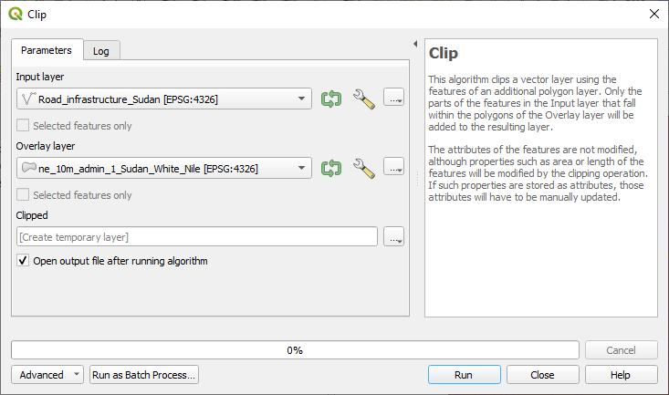
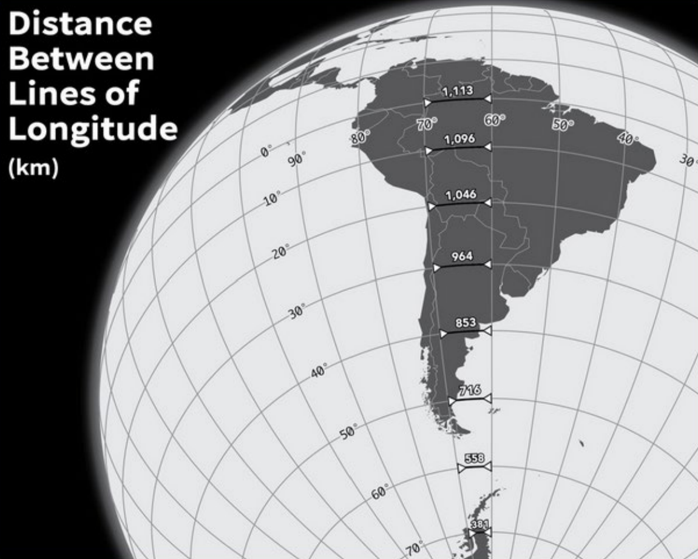
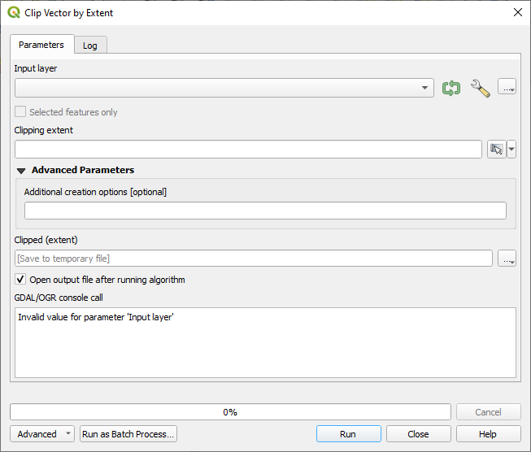
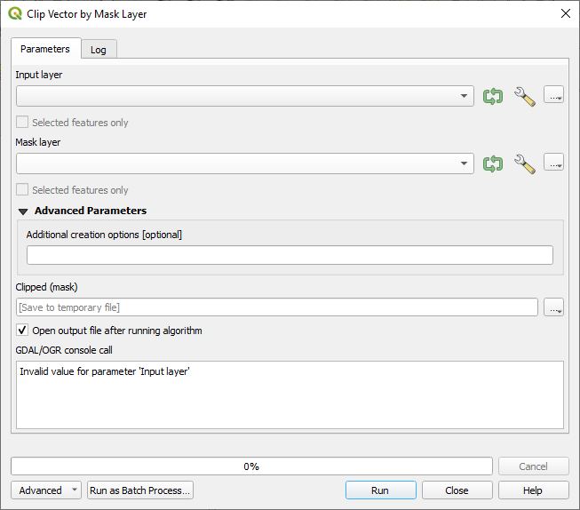

5.2. Operaciones de superposición (recorte, disolución, zona de influencia)#
Las operaciones de superposición nos permiten combinar las geometrías de dos capas de diferentes maneras (véase Fig. 5.9).
La diferencia con las uniones espaciales es que las geometrías se transforman en el proceso, y no principalmente los atributos.

Fig. 5.9 Representación visual de diferentes operaciones de superposición.#
Las operaciones de superposición incluyen recorte, zona de influencia y disolución. En los próximos subcapítulos, analizaremos cada una de estas operaciones de superposición y proporcionaremos algunos ejemplos en el ámbito humanitario.
5.2.1. Recorte#
La herramienta
Clipse utiliza para cortar una capa vectorial utilizando los límites de otra capa de polígonos. En otras palabras, extrae una parte de un conjunto de datos en función de los límites de otro.Mantiene solo las partes de las entidades de la capa de entrada que están dentro de los polígonos de la capa de superposición, lo que produce un conjunto de datos refinado.
Aunque los atributos principales de las entidades siguen siendo los mismos, algunas propiedades, como el área o la longitud, pueden cambiar después de la operación de recorte. Si ha almacenado estas propiedades como atributos, es posible que deba actualizarlas manualmente.
Ejemplo en el ámbito humanitario:
Los datos sobre la extensión de las inundaciones en Pakistán están disponibles, pero la atención se centra en el mapeo de los daños causados por las inundaciones en una región administrativa específica. En este caso, la capa de inundación se puede recortar a los límites administrativos del área de interés.
La herramienta tiene dos diferentes opciones de entrada:
Capa de entrada: Capa de la que se recorta la selección
Capa de superposición: Área de interés a la que se recortará la capa de entrada
{kind=link}

Fig. 5.10 Captura de pantalla de la herramienta Recortar con los datos de entrada.#
5.2.2. Ejercicio: Recortar una capa de carreteras a límites administrativos#
La información sobre la infraestructura vial para las operaciones de ayuda humanitaria es de suma importancia y se puede recuperar fácilmente de fuentes de datos de código abierto como OpenStreetMap. Sin embargo, esta información a menudo se incluye en conjuntos de datos extensos que contienen una cantidad significativa de detalles irrelevantes para operaciones específicas o cubre mucha más área de la necesaria para la operación. Para que el trabajo con estos datos sea más eficiente, es una práctica común recortar los datos al área de interés. Además del recorte, los datos a menudo se pueden filtrar para eliminar los datos que no nos interesan.
Cargue los datos de carreteras de OSM desde la herramienta de exportación HOT (parte del equipo humanitario de OpenStreetMap) aquí. como una nueva capa: Road_infrastructure_Sudan.geojson.
Filtre la capa por medio de generador de consultas para mostrar solo carreteras primarias y residenciales (“carretera” = ‘primary’ O “carretera” = ‘residential’).
Cargue la capa admin1 para Sudán que contiene el distrito Nilo Blanco, ne_10m_admin_1_Sudan_White_Nile.geojson. Se descarga de los datos de Natural Earth.
Seleccione la capa de carreteras y abra el diálogo de Recorte desde
Vector>Geoprocessing Tools.Configure las carreteras como capa de entrada y los límites del distrito de Nilo Blanco como capa de superposición.
Haga clic en Ejecutar para generar una capa temporal llamada “Recortada”.
Ahora tiene una capa de carreteras ordenadas que contiene la información necesaria.
Solución: Recortar una capa de carreteras a límites administrativos
5.2.3. Disolución#
La herramienta 
Dissolve crea una nueva capa y fusiona entidades superpuestas de una o dos capas vectoriales. Puede elegir uno o varios atributos para agrupar entidades que compartan el mismo valor para esos atributos. Alternativamente, puede combinar todas las entidades en una. Si está trabajando con polígonos, eliminará los límites compartidos entre ellos.
Si activa la opción “Mantener separadas las entidades no intersecas” al ejecutar la herramienta, se asegurará de que las entidades o partes que no se superponen ni se tocan entre sí se guarden como entidades independientes en lugar de formar parte de una entidad grande. Esto le permite crear varias capas vectoriales.
Ejemplo en el ámbito humanitario:
Dos conjuntos de datos muestran la extensión de la inundación de dos eventos de inundación diferentes en el último año. Ambas capas se superponen pero muestran diferencias. Disolver puede crear polígonos que muestren el área inundada en el último año.

Fig. 5.11 Zonas de influencia con límites disueltos (izquierda) y con límites intactos (derecha) que muestran áreas superpuestas
(fuente: QGIS Documentation, Version 3.28)#
En la siguiente sección sobre zona de influencia usaremos la herramienta de disolución.
5.2.4. Buffer#
La creación de zonas de influencia crea zonas de distancias predeterminadas alrededor de las entidades geométricas como una nueva capa de polígono. Estas zonas de influencia rodean las entidades vectoriales de entrada. Esta zona de influencia suele ser uniforme y se extiende hacia afuera desde las entidades de entrada originales, lo que la hace útil para diversos análisis espaciales y aplicaciones cartográficas. Se pueden crear estas zonas alrededor de puntos, líneas y polígonos, como se muestra en Fig. 5.12.
Algunos ejemplos de análisis que utilizan zona de influencia podrían ser:
Crear zonas de influencia para proteger el medio ambiente
Análisis de las áreas verdes alrededor de la zona residencial
Crear áreas de riesgo para desastres naturales.
Ejemplo en el ámbito humanitario:
Para analizar el acceso a fuentes de agua limpia, un escenario considera qué tan lejos puede caminar la población para llegar a ellas. Se crea una zona de influencia de 2 km alrededor de un conjunto de datos de pozos para visualizar qué áreas se encuentran dentro de esta distancia. Este método ayuda a evaluar la cobertura e identificar las deficiencias en el acceso al agua potable.

Fig. 5.12 Diferentes tipos de zonas de influencia
(adaptado según Documentación de QGIS, versión 3.28)#
Existen diferentes variantes de zona de influencia. La distancia de zona de influencia o el tamaño de esta puede variar según los valores numéricos proporcionados. Los valores numéricos deben definirse en unidades de mapa de acuerdo con el Sistema de Referencia de Coordenadas (SRC) utilizado con los datos.
Attention

Fig. 5.13 El mensaje de error que muestra QGIS al realizar cálculos basados en la distancia en un sistema de coordenadas geográficas.#
Si…
Aparece un mensaje de advertencia de proyección cartográfica
Sus capas no aparecen
Las capas se ven extrañas, p. ej., aplastadas
Se muestra el mensaje de error “uso de grados” al utilizar distancias (como se muestra en Fig. 5.13) … podría ser un problema de proyección.
Para resolverlo, intente…
Cambiar el SRC de la capa
Reproyectar la capa
Por ejemplo, si está intentando crear una zona de influencia en una capa con un sistema de coordenadas geográficas, QGIS le advertirá y le sugerirá que vuelva a proyectar la capa a un sistema de coordenadas métricas. Esto se debe a que cuando se utiliza un sistema de coordenadas métricas, el algoritmo utilizará grados para calcular la distancia del tamaño de la zona de influencia. Sin embargo, la distancia entre grados no es uniforme y depende de la latitud (véase Fig. 5.14)
{kind=link}

Fig. 5.14 Esta imagen ilustra esto: 10 grados de longitud en el ecuador son 1113 km, pero 10 grados de longitud a 70 grados de latitud son solo 381 km. (Fuente: Ricky Angueria).#
Es por ello que deberá convertir a un sistema de coordenadas local/proyectado para poder especificar distancias en km/millas (p. ej., cuando use la herramienta de zona de influencia).
5.2.5. Ejercicio: Crear una zona de influencia de 10 km alrededor de los centros de salud#
Otro ejemplo relevante para la labor humanitaria puede ser la creación de un mapa que proporcione información sobre la cobertura de los centros de salud en la distancia de 10 km. Para lograr esto, se crea una zona de influencia de 10 km alrededor de los puntos que representan los centros de salud. En algunos casos, esto creará zonas de influencia que se superponen. Para crear un área homogénea, podemos disolver zonas de influencia superpuestas.
Descargue los datos de los centros de salud de Sudán de HDX como shapefile.
Cargue sus datos nuevos en QGIS. Agregue también los límites del distrito de Jartum, ne_10m_admin_1_Sudan_Khartoum.geojson. También se descargan y se adaptan de los datos de Natural Earth.
Recorte sus centros de salud a los límites del distrito de Jartum.
Reproyecte la capa de centros de salud a un sistema de coordenadas local para habilitar la configuración de distancias en kilómetros.
Menú vectorial > Herramientas de gestión de datos > Reproyectar capa.
Seleccione la capa de centros de salud como capa de entrada.
Establezca el objetivo SRC a WGS 84 / UTM zona 36N (haga clic en el icono de proyecciones para buscar en la lista completa de opciones).
Haga clic
Runpara reproyectar.
Abra la herramienta zona de influencia accediendo a
Vector>Geoprocessing Tools>Buffer.Seleccione la capa reproyectada como capa de entrada.
Establezca la distancia a 10 km.
Marque la opción para disolver el resultado.
Deje las otras opciones como predeterminadas y haga clic en
Run.
Ahora tiene una visión general aproximada de la cobertura con centros de salud para el distrito de Jartum.
Solución: Crear una zona de influencia de 10 km alrededor de los centros de salud
5.2.6. Operaciones de recorte más avanzadas#
Además de la operación estándar Recorte de QGIS, hay otras dos herramientas más avanzadas para realizar procesos de recorte. Estas herramientas son operaciones GDAL, que permiten la definición de la extensión de recorte. Esta extensión puede ser un área específica o una capa de máscara. La segunda opción es bastante similar al proceso de recorte estándar proporcionado por QGIS.

Fig. 5.15 Las herramientas GDAL Recorte de vector por extensión y Recorte de vector por capa de máscara.#
Esta operación recorta cualquier archivo vectorial en una extensión determinada. Esta extensión de recorte se definirá mediante un cuadro delimitador que se debe utilizar para el archivo de salida vectorial. También debe definirse en las coordenadas SRC objetivo. Existen diferentes métodos para definir el cuadro delimitador, que constituyen la gran diferencia entre esta herramienta y el proceso de recorte estándar:
Calcular a partir de una capa: utiliza la extensión de una capa cargada en el proyecto actual.
Calcular a partir del mapa de diseño: utiliza la extensión de un elemento de mapa de diseño en el proyecto activo.
Calcular a partir de marcador: utiliza la extensión de un marcador guardado.
Utilizar la extensión del lienzo del mapa.
Dibujar en el lienzo: hacer clic y arrastrar un rectángulo que delimite el área a tener en cuenta.
Introducir las coordenadas como xmin, xmax, ymin ymax.
{kind=link}

Fig. 5.16 Captura de pantalla de la herramienta Recorte de vector por extensión#
Esta operación utiliza una capa de polígonos de máscara para recortar cualquier capa vectorial. Esta operación solo toma dos entradas:
La capa de entrada
La capa de máscara que se utiliza como extensión de recorte para la capa vectorial de entrada
{kind=link}

Fig. 5.17 Captura de pantalla de la herramienta Recorte de vector por capa de máscara.#
5.3. Preguntas de autoevaluación#
Ponga a prueba sus conocimientos
¿Qué es una operación de superposición en SIG y cuándo es útil?
Respuesta
Una operación de superposición es un tipo de herramienta de geoprocesamiento vectorial en SIG que combina o manipula las geometrías de dos (o más) capas en función de sus relaciones espaciales (como intersección, unión, recorte, etc.). Es útil:
Cuando se desea extraer un subconjunto de entidades de un conjunto de datos más grande (p. ej., recorte de carreteras a un límite administrativo)
Cuando se desea fusionar o agregar áreas espaciales (p. ej., disolver extensiones de inundación superpuestas en un área combinada).
En flujos de trabajo humanitarios u operacionales: p. ej., determinar el área de cobertura de los centros de salud, la extensión de las zonas de peligro dentro de una región o recortar grandes conjuntos de datos a un área de interés para mejorar la eficiencia.
Al realizar operaciones de superposición en QGIS, ¿cómo se combinan las tablas de atributos de las capas de entrada en la capa de salida? ¿Qué sucede con los atributos de cada entrada?
Respuesta
En la mayoría de los casos, QGIS le permite especificar qué atributos se copiarán de qué entrada a la salida del algoritmo. Si no se especifica nada, QGIS generalmente copiará todos los atributos de ambas capas a la capa resultante.
Aunque los atributos principales de las entidades siguen siendo los mismos, algunas propiedades, como el área o la longitud, pueden cambiar después de la operación de recorte. Si ha almacenado estas propiedades como atributos, es posible que tenga que actualizarlas en la capa resultante.